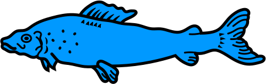
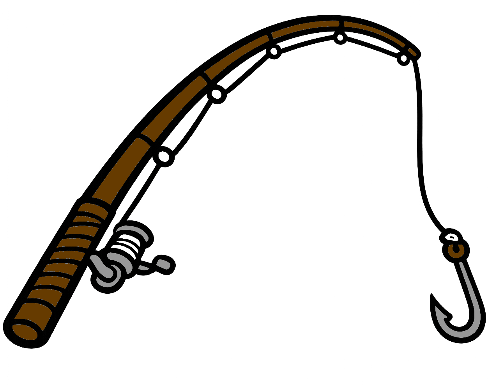

🐟 🌊 🌊 🐟
🏆 URKUNDE 🏆
für die erfolgreiche Teilnahme am Scratch-Kurs
„Der Fisch in der Waldnaab“
verliehen an
hat heute sein erstes eigenes Computerspiel mit Scratch programmiert, vom ersten Baustein bis zum fertigen Spiel. Herzlichen Glückwunsch! 🎉
⭐ 🐟 ⭐ 🐟 ⭐
Ort, Datum
Johannes Rabauer
Kursleiter
Kursleiter